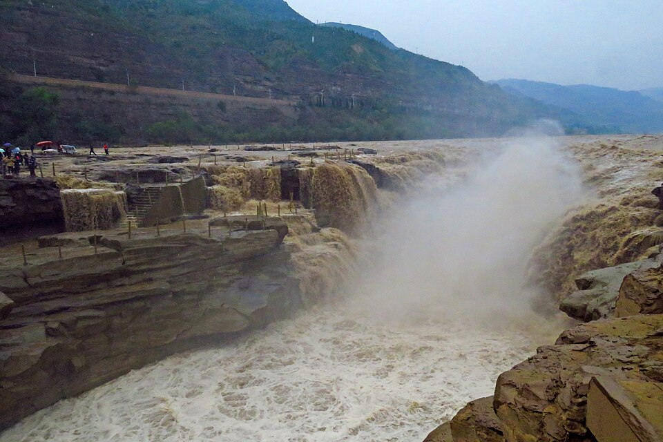
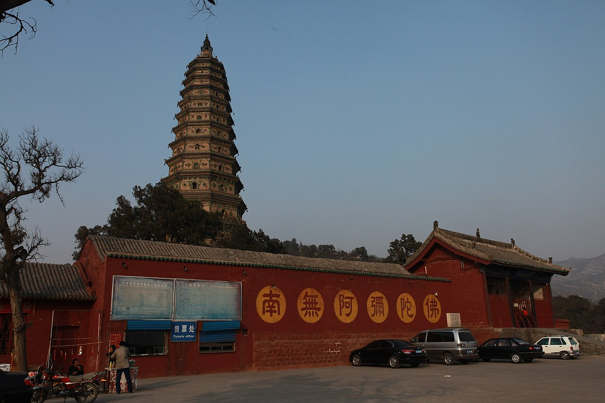
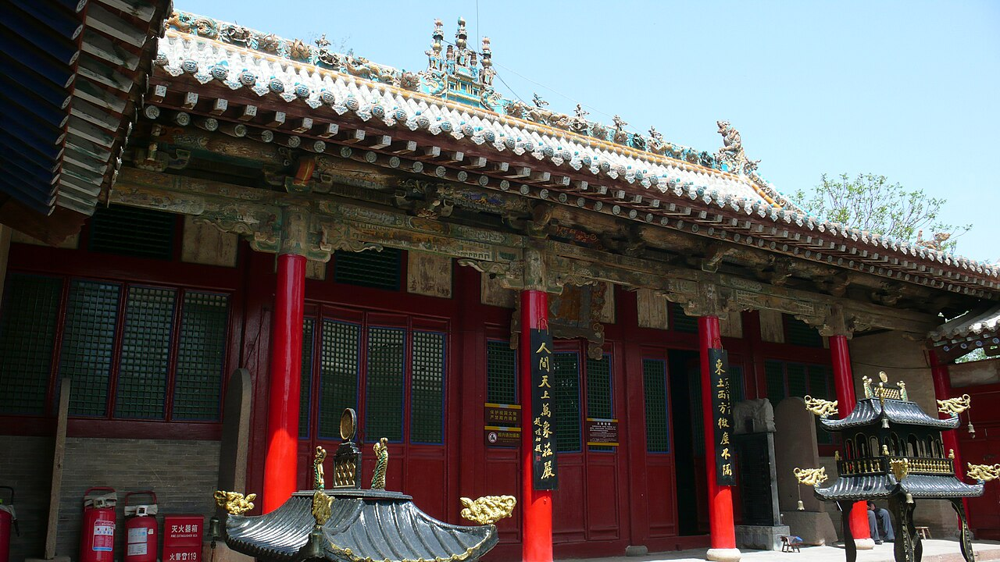
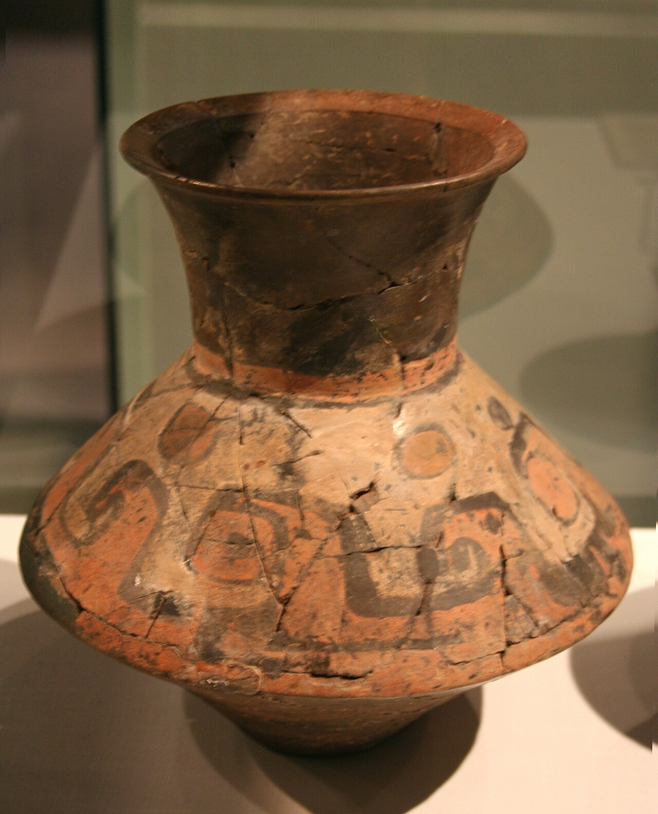

适合谁来
喜欢黄河景观、历史文化、古建筑、地方小吃和县域慢旅行的游客。
来这里看黄河壶口的奔腾，走进广胜寺与小西天的精美建筑，了解陶寺遗址和洪洞寻根文化，再用一碗牛肉丸子面认识晋南的日常味道。
临汾位于山西西南部，汾河穿城而过，西侧与黄河相邻。临汾市域范围较大，壶口瀑布、陶寺遗址、洪洞古迹、隰县小西天等分布在不同县市，适合按区域安排多日行程，不适合把所有景点压缩成一次短途游。
喜欢黄河景观、历史文化、古建筑、地方小吃和县域慢旅行的游客。
市区、洪洞、襄汾和壶口方向可分开安排；远距离景点尽量各留完整一天。
抵达车站后核对具体站名；县域景点分散，提前规划最后一段接驳交通。
以下景点各有不同主题。开放时间、票务、接驳和现场参观规则可能变化，出发前请再次核实。




图片说明：壶口瀑布、广胜寺、小西天和陶寺文物图片均有对应来源记录；陶器照片为博物馆藏品，不代表遗址现场。图片来源及授权信息见 图片来源文件。
临汾饮食不只是面食。市区和各县有牛肉丸子面、羊汤、蒸饭、烧麦、月饼、饸饹等不同风味。下面是地方饮食介绍，不代表对某家店铺、价格或食品供应情况的保证。
临汾较有代表性的面食之一，常以小麦面条搭配牛肉和牛肉丸，加入香辣汤底。辣度、油量和配料因店而异，可按口味提出少辣要求；如有清真饮食需求，应向店家确认认证与加工方式。
以羊肉或羊杂制作的热汤，常搭配饼、面食等主食。不同店铺使用的部位和调味不同，点餐前可以先询问具体食材。
洪洞一带常见的地方甜食线索，通常以黄米、红枣、豆类等蒸制，口感软糯。具体配方会因家庭和店铺而不同。
浮山地方小吃，薄皮包入馅料后蒸制。馅料可能有肉类或蔬菜版本，点餐前可确认成分。
乡宁特色面点之一，外皮酥脆、内部中空，常与节令和地方礼俗联系在一起。购买时留意保质期和具体口味。
将面团通过专用工具压制成条，再搭配汤底或浇头食用。霍州还有蒸食、豆腐等地方风味可继续探索。
面条与蔬菜、调味料一起炒制，口感筋道，适合不想吃汤面的游客。配料因餐馆而异。
吉县以苹果等农产品受到关注，时令水果和加工产品可作为旅途中的地方特产线索。
饮食提示：询问辣度、肉类种类、过敏原和烹饪用油；汤底和酱料可能含有肉类成分。菜单和供应会变化，以上内容介绍地方饮食传统，不保证某家餐馆一定供应。
鼓与锣组成的大型民间表演，常见于节庆和社区活动。遇到演出时请勿阻挡通道，近距离拍摄前先征得表演者同意。
早起体验面食、蒸食、糕点和时令水果。小摊位可能没有外语菜单，准备好简单的饮食需求说明会更方便。
在城市公园或河岸步道散步，是古迹和长途自驾之间较轻松的休息方式，也能观察当地人的日常生活。
乡宁、浮山、曲沃、霍州、襄汾等地都有各自的面点和家常饮食，建议选择一个县域深入体验，而不是为了吃一道小吃长距离赶路。
以下是灵活路线框架，不承诺具体车程。景点分布较广，自驾或提前安排司机接驳可能更方便。
先参观临汾市博物馆、尧庙并品尝牛肉丸子面；若开放时间和交通合适，再前往襄汾方向了解陶寺遗址与博物馆。
安排洪洞大槐树和广胜寺，留时间细看飞虹塔及寺院建筑。可以尝试当地蒸饭或家常饭菜，出发前确认景点开放情况。
为壶口瀑布留出完整一天，提前查看天气、景区公告和道路信息。小西天位于另一方向，建议另安排一天，不要强行塞进同一天。
临汾属温带大陆性季风气候，冬季寒冷干燥，夏季较热。春秋季通常适合城市漫步和古迹参观，但黄河沿线与山区的天气可能和市区差异明显。
气温变化较大，可能有风和干燥天气。建议分层穿衣，准备防晒和防风用品。
天气炎热，降雨和雷雨可能增多。前往黄河、山区前查看防汛、道路和景区公告。
秋季较适合文化游览；冬季寒冷，注意保暖、防滑，并确认长途交通和户外景点开放情况。
临汾西站是许多高铁旅客使用的车站，但请以车票上的具体站名为准。县域景点距离较远，提前比较公共交通、包车和当地接驳。
开放时间、票务规则和接驳服务可能随季节、节假日或维护调整，出发前通过景区官方渠道核实。
遵守拍摄规定，不触摸彩绘、塑像和脆弱文物；寺庙和博物馆内保持安静，注意台阶和无障碍条件。
提前准备可用的支付方式，并保留过敏原或饮食禁忌的文字说明。不要仅凭菜名判断一道菜是否为素食。